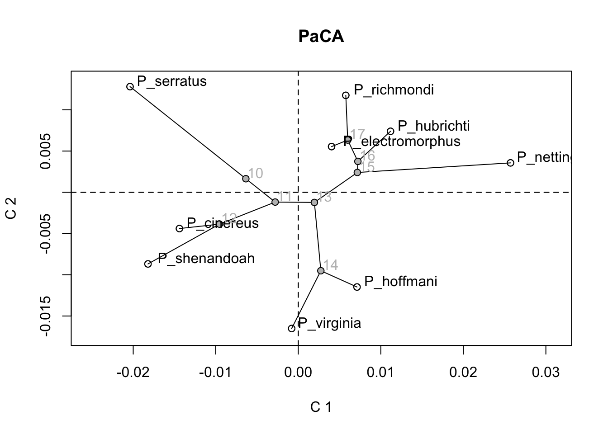

if(length(c("geomorph")[!c("geomorph") %in% installed.packages()[,"Package"]]) > 0){
install.packages(c("geomorph")[!c("geomorph") %in% installed.packages()[,"Package"]])
}An introduction to Geomorph
1.0 Preparing your data
In geomorph, you can digitize fixed landmarks, and semilandmarks on surfaces, using a 3D surface object or a mesh3d object. In its simplest version, this involves the following geomorph functions: digit.fixed, buildtemplate, and digitsurface. If you want to use curve semilandmarks, these may be either digitized as fixed landmarks, and then indexed for sliding using the curves argument of gpagen(); or sampled automatically from a digitized curve using digit.curves().
1.1 Digitizing fixed landmarksy
We will be using the scallop example ply file included in geomorph.
First, check you have geomorph installed.
Next, let’s load it and the example data in.
library(geomorph)Loading required package: RRPPLoading required package: rglLoading required package: Matrixdata("scallopPLY")
my.ply <- scallopPLY$plyLet´s also make sure that our working directory is set to an adequate location. This is particularly relevant for 3D digitizing, as throughout the process, files with the digitized landmark coordinates, as well as the template we will create for replicating 3D surface semilandmarks across specimens, will be stored and automatically read in by functions. For this example, we will work in the subdirectory ~/example3D/, so go ahead and make sure your working directory is set to a folder with that name. I’d recommend creating a new folder on your desktop.
Once a ply file is imported (usually using read.ply), one will first digitize the fixed landmarks using digit.fixed(). Note that this is an interactive function, so you will need to replicate these steps in your R console to be able to see the full version of this example. We will digitize 5 fixed landmarks (you set a landmark by right-clicking, then clicking ‘y’).
# digitize landmarks
fixed.lms1 <- digit.fixed(spec = my.ply, fixed = 5)Keep Landmark 1 (y/n)?
Keep Landmark 2 (y/n)?
Keep Landmark 3 (y/n)?
Keep Landmark 4 (y/n)?
Keep Landmark 5 (y/n)? Note that landmark selection on the 3dmesh is done by choosing the point of the scan closest to where you click with your mouse. This means that occasionally points may appear to “go through to the other side of the structure”, especially if your initial point cloud is not very dense. To solve this issue, try rotating the structure to find a better view for digitizing, or zooming in such that you can click close to one of the scan points (these are visible as tiny grey points when you zoom in). Place your landmarks in the points specified in the support document.
Now have a look at your working directory. A new file has been created, called my.ply.nts. This contains the coordinates of the digitized 3D fixed landmarks for your specimen.
Now let´s add a second specimen. For the example, we will just replicate the ply file of the first one, but with a different name. Go ahead and digitize the same five landmarks on this second specimen. A second nts file, called my.ply.2.nts is now created in your working directory.
my.ply.2 <- scallopPLY$ply
fixed.lms2 <- digit.fixed(my.ply.2, 5)Keep Landmark 1 (y/n)?
Keep Landmark 2 (y/n)?
Keep Landmark 3 (y/n)?
Keep Landmark 4 (y/n)?
Keep Landmark 5 (y/n)? If one wishes to continue and sample also surface semilandmarks, this step can be performed together with the acquisition of surface sliders (see below).
1.2 Sampling surface semilandmarks
1.2.1 Building the template
Now that the fixed landmarks have been digitized, we can continue and sample surface sliding semilandmarks. We will use the first specimen as the reference from which to build a template, which will then be used to sample these semilandmarks across all specimens in our sample. This is done using the function buildtemplate. We will sample 100 surface semilandmarks.
surf.pts1 <- buildtemplate(spec = my.ply, fixed = fixed.lms1, surface.sliders = 100)One may want to import fixed landmarks already digitized and saved as an nts file. This can be easily done using readland.nts, but remember that the input to the argument fixed above is a matrix, so you will need to combine that to two.d.array to obtain a 2d-matrix with the coordinates of the fixed landmarks.
When running buildtemplate you will see the sampled surface semilandmarks in an rgl device. Have a look at it - is it covered in blue dots?
Note that a txt file containing the coordinates of the sampled surface semilandmarks has been created in your working directory, with the name template.txt. Also, note that the file my.ply.nts has been modified, and it now contains the coordinates of the fixed landmarks AND surface semilandmarks. Finally, a csv file containing the index of sliding semilandmarks has been created, and can be read for use with the argument surfaces of gpagen.
One may choose to perform steps 1. and 2. above at once for the reference specimen. In that case, the argument fixed of buildtemplate would indicate the number of fixed landmarks to be digitized (i.e. 5 in our example).
1.2.2 Sampling surface semilandmarks in subsequent specimens
Now that the template has been created, we will use it to sample homologous surface semilandmarks in the second specimen in our sample. This is done using the function digitsurface.
surf.pts2 <- digitsurface(spec = my.ply.2, fixed = fixed.lms2)
Warping template
|
| | 0%
|
| | 1%
|
|= | 1%
|
|= | 2%
|
|== | 2%
|
|== | 3%
|
|=== | 4%
|
|=== | 5%
|
|==== | 5%
|
|==== | 6%
|
|===== | 7%
|
|===== | 8%
|
|====== | 8%
|
|====== | 9%
|
|======= | 9%
|
|======= | 10%
|
|======= | 11%
|
|======== | 11%
|
|======== | 12%
|
|========= | 12%
|
|========= | 13%
|
|========== | 14%
|
|========== | 15%
|
|=========== | 15%
|
|=========== | 16%
|
|============ | 17%
|
|============ | 18%
|
|============= | 18%
|
|============= | 19%
|
|============== | 19%
|
|============== | 20%
|
|============== | 21%
|
|=============== | 21%
|
|=============== | 22%
|
|================ | 22%
|
|================ | 23%
|
|================= | 24%
|
|================= | 25%
|
|================== | 25%
|
|================== | 26%
|
|=================== | 27%
|
|=================== | 28%
|
|==================== | 28%
|
|==================== | 29%
|
|===================== | 29%
|
|===================== | 30%
|
|===================== | 31%
|
|====================== | 31%
|
|====================== | 32%
|
|======================= | 32%
|
|======================= | 33%
|
|======================== | 34%
|
|======================== | 35%
|
|========================= | 35%
|
|========================= | 36%
|
|========================== | 37%
|
|========================== | 38%
|
|=========================== | 38%
|
|=========================== | 39%
|
|============================ | 39%
|
|============================ | 40%
|
|============================ | 41%
|
|============================= | 41%
|
|============================= | 42%
|
|============================== | 42%
|
|============================== | 43%
|
|=============================== | 44%
|
|=============================== | 45%
|
|================================ | 45%
|
|================================ | 46%
|
|================================= | 47%
|
|================================= | 48%
|
|================================== | 48%
|
|================================== | 49%
|
|=================================== | 49%
|
|=================================== | 50%
|
|=================================== | 51%
|
|==================================== | 51%
|
|==================================== | 52%
|
|===================================== | 52%
|
|===================================== | 53%
|
|====================================== | 54%
|
|====================================== | 55%
|
|======================================= | 55%
|
|======================================= | 56%
|
|======================================== | 57%
|
|======================================== | 58%
|
|========================================= | 58%
|
|========================================= | 59%
|
|========================================== | 59%
|
|========================================== | 60%
|
|========================================== | 61%
|
|=========================================== | 61%
|
|=========================================== | 62%
|
|============================================ | 62%
|
|============================================ | 63%
|
|============================================= | 64%
|
|============================================= | 65%
|
|============================================== | 65%
|
|============================================== | 66%
|
|=============================================== | 67%
|
|=============================================== | 68%
|
|================================================ | 68%
|
|================================================ | 69%
|
|================================================= | 69%
|
|================================================= | 70%
|
|================================================= | 71%
|
|================================================== | 71%
|
|================================================== | 72%
|
|=================================================== | 72%
|
|=================================================== | 73%
|
|==================================================== | 74%
|
|==================================================== | 75%
|
|===================================================== | 75%
|
|===================================================== | 76%
|
|====================================================== | 77%
|
|====================================================== | 78%
|
|======================================================= | 78%
|
|======================================================= | 79%
|
|======================================================== | 79%
|
|======================================================== | 80%
|
|======================================================== | 81%
|
|========================================================= | 81%
|
|========================================================= | 82%
|
|========================================================== | 82%
|
|========================================================== | 83%
|
|=========================================================== | 84%
|
|=========================================================== | 85%
|
|============================================================ | 85%
|
|============================================================ | 86%
|
|============================================================= | 87%
|
|============================================================= | 88%
|
|============================================================== | 88%
|
|============================================================== | 89%
|
|=============================================================== | 89%
|
|=============================================================== | 90%
|
|=============================================================== | 91%
|
|================================================================ | 91%
|
|================================================================ | 92%
|
|================================================================= | 92%
|
|================================================================= | 93%
|
|================================================================== | 94%
|
|================================================================== | 95%
|
|=================================================================== | 95%
|
|=================================================================== | 96%
|
|==================================================================== | 97%
|
|==================================================================== | 98%
|
|===================================================================== | 98%
|
|===================================================================== | 99%
|
|======================================================================| 99%
|
|======================================================================| 100%Once the surface semilandmarks have been sampled, you will see a graph with their position in specimen 2. As before, the file my.ply.2.nts has been modified, and it now contains the coordinates of the fixed landmarks (red) AND surface semilandmarks for specimen 2 (green).
Same as for building the template, one may choose to simultaneously digitize fixed landmarks and sample surface semilandmarks using the template.
1.3 Plotting 3D specimens
At any moment, you can plot a specimen together with fixed landmarks and surface sliding semilandmarks using plotspec.
plotspec(spec = my.ply, digitspec = surf.pts1, fixed = 5, centered = T)2.0 Principal components analysis and visualisation tools for exploring shape space
Version 3.1.0 of geomorph introduced the function gm.prcomp, and related utility functions (summary() and plot()), for performing principal components analyses on Procrustes shape variables for a set of aligned specimens. This function now includes several different types of analytical options and, combined with other visualization tools available in geomorph, provides tools for exploring variation in shape space.
Throughout, we will be using shape data of several Plethodon species as an example, so let´s first load and superimpose those.
rm(list=ls())
data("plethspecies")
Y.gpa <- gpagen(plethspecies$land, print.progress = F)2.1 Traditional PCA and visualising shape patterns
One first option is to perform a “traditional” PCA, i.e. based on OLS-centering and projection of the data. This is very much like what is performed in the basic R function prcomp.
PCA <- gm.prcomp(Y.gpa$coords)
summary(PCA)
Ordination type: Principal Component Analysis
Centering by OLS mean
Orthogonal projection of OLS residuals
Number of observations: 9
Number of vectors 8
Importance of Components:
Comp1 Comp2 Comp3 Comp4
Eigenvalues 0.0002720474 0.0001120524 0.0001084758 0.0000568924
Proportion of Variance 0.4564029477 0.1879858086 0.1819855633 0.0954461044
Cumulative Proportion 0.4564029477 0.6443887563 0.8263743196 0.9218204240
Comp5 Comp6 Comp7 Comp8
Eigenvalues 0.0000264508 1.260516e-05 5.959622e-06 1.584785e-06
Proportion of Variance 0.0443754550 2.114717e-02 9.998220e-03 2.658730e-03
Cumulative Proportion 0.9661958790 9.873431e-01 9.973413e-01 1.000000e+00plot(PCA, main = "PCA")Let’s customise this plot:
plot(PCA, main = "PCA", pch = 22, bg = "green", cex = 1.5, cex.lab = 1.5, font.lab = 2)
One then has several solutions for exploring shape variation across PC space and visualizing shape patterns. First, the user may choose to manually produce deformation grids to compare the shapes corresponding to the extremes of a chosen PC axis using plotRefToTarget. For example, one can:
- Compare the minimum and maximum values to the global consensus:
msh <- mshape(Y.gpa$coords)
par(mfrow = c(1,2))
# Minimum
plotRefToTarget(PCA$shapes$shapes.comp1$min, msh)
plotRefToTarget(msh, PCA$shapes$shapes.comp1$max)
# Maximum
par(mfrow = c(1,1))- Comparing the minimum and maximum values:
plotRefToTarget(PCA$shapes$shapes.comp1$min, PCA$shapes$shapes.comp1$max, method = "vector", mag = 2)Of course here one can use all the plotting options available in plotRefToTarget. Please see the help file of that function for details.
?plotRefToTarget2.2 Phylomorphospace
One may also want to project a phylogeny (if dealing with species-level observations), and estimated ancestral states into the ordination plot produced before, to obtain what is commonly referred to as a “phylomorphospace” plot. This can be easily done by providing a phylogenetic tree during the analysis (which is however NOT used in the analytical step in this case, other than for estimating ancestral states), and then indicating that the phylogeny should also be plotted during the plotting step. For the Plethodon example data, we may project the phylogeny into the previous ordination plot as such:
PCA.w.phylo <- gm.prcomp(Y.gpa$coords, phy = plethspecies$phy)
summary(PCA.w.phylo)
Ordination type: Principal Component Analysis
Centering by OLS mean
Orthogonal projection of OLS residuals
Number of observations: 9
Number of vectors 8
Importance of Components:
Comp1 Comp2 Comp3 Comp4
Eigenvalues 0.0002720474 0.0001120524 0.0001084758 0.0000568924
Proportion of Variance 0.4564029477 0.1879858086 0.1819855633 0.0954461044
Cumulative Proportion 0.4564029477 0.6443887563 0.8263743196 0.9218204240
Comp5 Comp6 Comp7 Comp8
Eigenvalues 0.0000264508 1.260516e-05 5.959622e-06 1.584785e-06
Proportion of Variance 0.0443754550 2.114717e-02 9.998220e-03 2.658730e-03
Cumulative Proportion 0.9661958790 9.873431e-01 9.973413e-01 1.000000e+00
Dispersion (variance) of points, after projection:
Comp1 Comp2 Comp3
Tips Dispersion 2.720474e-04 1.120524e-04 1.084758e-04
Proportion Tips Dispersion 4.564029e-01 1.879858e-01 1.819856e-01
Cumulative Tips Dispersion 4.564029e-01 6.443888e-01 8.263743e-01
Ancestors Dispersion 3.073342e-05 2.320038e-05 2.039005e-05
Proportion Ancestors Dispersion 3.854327e-01 2.909597e-01 2.557149e-01
Cumulative Ancestors Dispersion 3.854327e-01 6.763923e-01 9.321072e-01
Comp4 Comp5 Comp6
Tips Dispersion 5.689240e-05 2.645080e-05 1.260516e-05
Proportion Tips Dispersion 9.544610e-02 4.437545e-02 2.114717e-02
Cumulative Tips Dispersion 9.218204e-01 9.661959e-01 9.873431e-01
Ancestors Dispersion 3.171758e-06 1.748508e-06 3.945777e-07
Proportion Ancestors Dispersion 3.977752e-02 2.192831e-02 4.948462e-03
Cumulative Ancestors Dispersion 9.718847e-01 9.938130e-01 9.987615e-01
Comp7 Comp8
Tips Dispersion 5.959622e-06 1.584785e-06
Proportion Tips Dispersion 9.998220e-03 2.658730e-03
Cumulative Tips Dispersion 9.973413e-01 1.000000e+00
Ancestors Dispersion 8.354868e-08 1.520561e-08
Proportion Ancestors Dispersion 1.047797e-03 1.906960e-04
Cumulative Ancestors Dispersion 9.998093e-01 1.000000e+00plot(PCA.w.phylo, phylo = TRUE, main = "PCA.w.phylo")Note that the summary statistics obtained for this analysis are identical to those from the previous one. This is because here the phylogeny is merely used for plotting, and is NOT considered during the analytical procedures.
Again, all plotting arguments can be directly manipulated by the user. Please see the help file of plot.gm.prcomp for details.
?plot.gm.prcomp2.3 phyloPCA
Here, the phylogeny IS considered during the analytical step of the ordination, as the principal components analysis is in this case calculated based on GLS-centering and projection of the data. This is to account for the nonindependence among observations of species. For details on the analytical part of this method, see Revell 2009, Evolution 63: 3258 - 3268; Polly et al 2013, Hystrix 24: 33 - 41; Collyer & Adams, submitted.
For the Plethodon example data, this analysis would be implemented and plotted as follows (first with untransformed residual projection, second with transformed residual projection):
# Phylo PCA without projecting untransformed residuals
phylo.PCA <- gm.prcomp(Y.gpa$coords, phy = plethspecies$phy, GLS = TRUE)
summary(phylo.PCA)
Ordination type: Principal Component Analysis
Centering by GLS mean
Oblique projection of GLS-centered residuals
Number of observations: 9
Number of vectors 8
Importance of Components:
Comp1 Comp2 Comp3 Comp4
Eigenvalues 2.761405e-05 9.322868e-06 7.889847e-06 6.605120e-06
Proportion of Variance 4.855705e-01 1.639351e-01 1.387365e-01 1.161457e-01
Cumulative Proportion 4.855705e-01 6.495056e-01 7.882421e-01 9.043878e-01
Comp5 Comp6 Comp7 Comp8
Eigenvalues 3.017886e-06 1.203779e-06 9.895110e-07 2.262231e-07
Proportion of Variance 5.306707e-02 2.116747e-02 1.739975e-02 3.977950e-03
Cumulative Proportion 9.574548e-01 9.786223e-01 9.960221e-01 1.000000e+00
Dispersion (variance) of points, after projection:
Comp1 Comp2 Comp3
Tips Dispersion 0.0002498092 8.395185e-05 1.057114e-04
Proportion Tips Dispersion 0.4190949497 1.408427e-01 1.773479e-01
Cumulative Tips Dispersion 0.4190949497 5.599376e-01 7.372855e-01
Ancestors Dispersion 0.0000169982 9.862682e-06 2.194379e-05
Proportion Ancestors Dispersion 0.2131770701 1.236895e-01 2.752006e-01
Cumulative Ancestors Dispersion 0.2131770701 3.368665e-01 6.120671e-01
Comp4 Comp5 Comp6
Tips Dispersion 0.0001027383 2.765308e-05 1.675548e-05
Proportion Tips Dispersion 0.1723598707 4.639247e-02 2.811000e-02
Cumulative Tips Dispersion 0.9096453329 9.560378e-01 9.841478e-01
Ancestors Dispersion 0.0000272722 1.114653e-06 1.772175e-06
Proportion Ancestors Dispersion 0.3420249711 1.397905e-02 2.222513e-02
Cumulative Ancestors Dispersion 0.9540920945 9.680711e-01 9.902963e-01
Comp7 Comp8
Tips Dispersion 7.598972e-06 1.850019e-06
Proportion Tips Dispersion 1.274849e-02 3.103703e-03
Cumulative Tips Dispersion 9.968963e-01 1.000000e+00
Ancestors Dispersion 7.068511e-07 6.689930e-08
Proportion Ancestors Dispersion 8.864732e-03 8.389947e-04
Cumulative Ancestors Dispersion 9.991610e-01 1.000000e+00plot(phylo.PCA, phylo = TRUE, main = "phylo PCA")# Plot the transformed residuals
phylo.tPCA <- gm.prcomp(Y.gpa$coords, phy = plethspecies$phy, GLS = TRUE, transform = TRUE)
summary(phylo.tPCA)
Ordination type: Principal Component Analysis
Centering by GLS mean
GLS residuals transformed for orthogonal projection
Number of observations: 9
Number of vectors 8
Importance of Components:
Comp1 Comp2 Comp3 Comp4
Eigenvalues 2.761405e-05 9.322868e-06 7.889847e-06 6.605120e-06
Proportion of Variance 4.855705e-01 1.639351e-01 1.387365e-01 1.161457e-01
Cumulative Proportion 4.855705e-01 6.495056e-01 7.882421e-01 9.043878e-01
Comp5 Comp6 Comp7 Comp8
Eigenvalues 3.017886e-06 1.203779e-06 9.895110e-07 2.262231e-07
Proportion of Variance 5.306707e-02 2.116747e-02 1.739975e-02 3.977950e-03
Cumulative Proportion 9.574548e-01 9.786223e-01 9.960221e-01 1.000000e+00
Dispersion (variance) of points, after projection:
Comp1 Comp2 Comp3
Tips Dispersion 2.740155e-05 8.385080e-06 7.889441e-06
Proportion Tips Dispersion 4.933393e-01 1.509655e-01 1.420420e-01
Cumulative Tips Dispersion 4.933393e-01 6.443048e-01 7.863468e-01
Ancestors Dispersion 1.604482e-06 8.942699e-07 1.578102e-06
Proportion Ancestors Dispersion 3.034061e-01 1.691056e-01 2.984176e-01
Cumulative Ancestors Dispersion 3.034061e-01 4.725117e-01 7.709293e-01
Comp4 Comp5 Comp6
Tips Dispersion 6.590826e-06 2.909294e-06 1.175603e-06
Proportion Tips Dispersion 1.186617e-01 5.237912e-02 2.116563e-02
Cumulative Tips Dispersion 9.050085e-01 9.573876e-01 9.785532e-01
Ancestors Dispersion 1.007063e-06 6.196138e-08 1.114791e-07
Proportion Ancestors Dispersion 1.904346e-01 1.171684e-02 2.108060e-02
Cumulative Ancestors Dispersion 9.613640e-01 9.730808e-01 9.941614e-01
Comp7 Comp8
Tips Dispersion 9.878523e-07 2.033663e-07
Proportion Tips Dispersion 1.778536e-02 3.661419e-03
Cumulative Tips Dispersion 9.963386e-01 1.000000e+00
Ancestors Dispersion 2.711996e-08 3.755919e-09
Proportion Ancestors Dispersion 5.128360e-03 7.102409e-04
Cumulative Ancestors Dispersion 9.992898e-01 1.000000e+00plot(phylo.tPCA, phylo = TRUE, main = "phylo PCA with transformed projection")What looks different?
2.4 PaCA: phylogenetically-aligned PCA
This recently introduced method (Collyer & Adams, submitted) provides an ordination that aligns phenotypic data with phylogenetic signal, by maximizing variation in directions that describe phylogenetic signal, while simultaneously preserving the Euclidean distances among observations in the data space. PaCA provides a projection that shows the most phylogenetic signal in the first few components, irrespective of other signals in the data. By comparing PCA, phyloPCA and PaCA results, one may glean the relative importance of phylogenetic and other (ecological) signals in the data.
For the Plethodon example data, this analysis would be implemented and plotted as follows:
PaCA <- gm.prcomp(Y.gpa$coords, phy = plethspecies$phy, align.to.phy = TRUE)
summary(PaCA)
Ordination type: Alignment to an alternative matrix
Alignment matrix: phy
Centering by OLS mean
OLS residuals
Alignment to phy means residual projection is not orthogonal.
Number of observations: 9
Number of vectors 8
Importance of Components:
Comp1 Comp2 Comp3 Comp4
Singular Value 0.0003931629 0.0001155198 5.091258e-05 2.660786e-05
Proportion of Covariance 0.6595936040 0.1938028696 8.541399e-02 4.463894e-02
Cumulative Proportion 0.6595936040 0.8533964737 9.388105e-01 9.834494e-01
RV by Component 0.0993211764 0.0291827102 1.286158e-02 6.721702e-03
Cumulative RV 0.0993211764 0.1285038867 1.413655e-01 1.480872e-01
Comp5 Comp6 Comp7 Comp8
Singular Value 6.598675e-06 2.351469e-06 7.108871e-07 2.042572e-07
Proportion of Covariance 1.107033e-02 3.944966e-03 1.192627e-03 3.426742e-04
Cumulative Proportion 9.945197e-01 9.984647e-01 9.996573e-01 1.000000e+00
RV by Component 1.666963e-03 5.940304e-04 1.795850e-04 5.159965e-05
Cumulative RV 1.497541e-01 1.503482e-01 1.505278e-01 1.505794e-01
Dispersion (variance) of points, after projection:
Comp1 Comp2 Comp3
Tips Dispersion 2.301865e-04 1.124810e-04 1.133102e-04
Proportion Tips Dispersion 3.861747e-01 1.887049e-01 1.900960e-01
Cumulative Tips Dispersion 3.861747e-01 5.748795e-01 7.649755e-01
Ancestors Dispersion 4.069158e-05 2.437196e-05 8.067595e-06
Proportion Ancestors Dispersion 5.103196e-01 3.056526e-01 1.011770e-01
Cumulative Ancestors Dispersion 5.103196e-01 8.159722e-01 9.171492e-01
Comp4 Comp5 Comp6
Tips Dispersion 7.526878e-05 4.046474e-05 1.571235e-05
Proportion Tips Dispersion 1.262754e-01 6.788606e-02 2.635999e-02
Cumulative Tips Dispersion 8.912509e-01 9.591370e-01 9.854970e-01
Ancestors Dispersion 6.244464e-06 3.539330e-07 3.508799e-09
Proportion Ancestors Dispersion 7.831282e-02 4.438730e-03 4.400441e-05
Cumulative Ancestors Dispersion 9.954620e-01 9.999008e-01 9.999448e-01
Comp7 Comp8
Tips Dispersion 6.396433e-06 2.248360e-06
Proportion Tips Dispersion 1.073104e-02 3.771984e-03
Cumulative Tips Dispersion 9.962280e-01 1.000000e+00
Ancestors Dispersion 2.594059e-09 1.810230e-09
Proportion Ancestors Dispersion 3.253251e-05 2.270238e-05
Cumulative Ancestors Dispersion 9.999773e-01 1.000000e+00plot(PaCA, phylo = TRUE, main = "PaCA")
2.5 Three-dimensional PCA plot with a phylogeny and time on the z-axis
Finally, plot.gm.prcomp provides the possibility of producing a 3D plot of any two PCA axes, with the phylogenetic tree connecting the observations and time on the z-axis. Again, different plotting parameters can be controlled to manipulate plot aesthetics. Note, that in this case an rgl plotting device will open for the 3D plot, but the corresponding biplot with the phylogeny projected (option 2, above) will also be produced.
plot(PCA.w.phylo, time.plot = TRUE, pch = 22, bg = c(rep("red", 5), rep("green", 4)), cex = 2,
phylo.par = list(edge.color = "grey60", edge.width = 1.5, tip.txt.cex = 0.75,
node.labels = F, anc.states = F))3.0 Model fitting in geomorph
3.1 Defining models
For the final section of the tutorial, let’s clear up our workspace and load in the final example dataset.
rm(list = ls())
data("larvalMorph")Now let’s perform GPA.
Y.gpa <- gpagen(larvalMorph$tailcoords, curves = larvalMorph$tail.sliders,
ProcD = FALSE, print.progress = FALSE)
plot(Y.gpa)Next, let’s define some putative models of shape variation that would be biologically relevant.
gdf <- geomorph.data.frame(Y.gpa, treatment = larvalMorph$treatment,
family = larvalMorph$family)
# simple allometry model
fit.size <- procD.lm(coords ~ log(Csize), data = gdf, print.progress = FALSE)
# unique family allometries
fit.family<- procD.lm(coords ~ log(Csize) * family, data = gdf, print.progress = FALSE)
# unique treatment: family allometries
fit.treatment<- procD.lm(coords ~ log(Csize) * treatment/family, data = gdf, print.progress = FALSE) Now let’s take a look at the models.
fit.size
Linear Model fit with lm.rrpp
Number of observations: 114
Number of dependent variables: 128
Data space dimensions: 113
Sums of Squares and Cross-products: Type I
Number of permutations: 1000
Call: procD.lm(f1 = coords ~ log(Csize), data = gdf, print.progress = FALSE)fit.family
Linear Model fit with lm.rrpp
Number of observations: 114
Number of dependent variables: 128
Data space dimensions: 113
Sums of Squares and Cross-products: Type I
Number of permutations: 1000
Call: procD.lm(f1 = coords ~ log(Csize) * family, data = gdf, print.progress = FALSE)fit.treatment
Linear Model fit with lm.rrpp
Number of observations: 114
Number of dependent variables: 128
Data space dimensions: 113
Sums of Squares and Cross-products: Type I
Number of permutations: 1000
Call: procD.lm(f1 = coords ~ log(Csize) * treatment/family, data = gdf,
print.progress = FALSE)Now we have defined our models, we can test how they fit our data using ANOVA.
3.2 Performing ANOVA and model comparisons
The following are the typical ANOVA tables for each model:
anova(fit.size)
Analysis of Variance, using Residual Randomization
Permutation procedure: Randomization of null model residuals
Number of permutations: 1000
Estimation method: Ordinary Least Squares
Sums of Squares and Cross-products: Type I
Effect sizes (Z) based on F distributions
Df SS MS Rsq F Z Pr(>F)
log(Csize) 1 0.50263 0.50263 0.16206 21.661 3.1141 0.001 **
Residuals 112 2.59885 0.02320 0.83794
Total 113 3.10147
---
Signif. codes: 0 '***' 0.001 '**' 0.01 '*' 0.05 '.' 0.1 ' ' 1
Call: procD.lm(f1 = coords ~ log(Csize), data = gdf, print.progress = FALSE)anova(fit.family)
Analysis of Variance, using Residual Randomization
Permutation procedure: Randomization of null model residuals
Number of permutations: 1000
Estimation method: Ordinary Least Squares
Sums of Squares and Cross-products: Type I
Effect sizes (Z) based on F distributions
Df SS MS Rsq F Z Pr(>F)
log(Csize) 1 0.50263 0.50263 0.16206 22.5073 3.1333 0.001 **
family 3 0.21009 0.07003 0.06774 3.1360 2.2172 0.011 *
log(Csize):family 3 0.02160 0.00720 0.00696 0.3224 -1.5886 0.952
Residuals 106 2.36715 0.02233 0.76324
Total 113 3.10147
---
Signif. codes: 0 '***' 0.001 '**' 0.01 '*' 0.05 '.' 0.1 ' ' 1
Call: procD.lm(f1 = coords ~ log(Csize) * family, data = gdf, print.progress = FALSE)anova(fit.treatment)
Analysis of Variance, using Residual Randomization
Permutation procedure: Randomization of null model residuals
Number of permutations: 1000
Estimation method: Ordinary Least Squares
Sums of Squares and Cross-products: Type I
Effect sizes (Z) based on F distributions
Df SS MS Rsq F Z Pr(>F)
log(Csize) 1 0.50263 0.50263 0.16206 26.6673 3.2716 0.001
treatment 5 0.45807 0.09161 0.14770 4.8607 3.5710 0.001
log(Csize):treatment 5 0.08025 0.01605 0.02587 0.8515 -0.1177 0.553
log(Csize):treatment:family 18 0.47729 0.02652 0.15389 1.4068 1.3236 0.098
Residuals 84 1.58323 0.01885 0.51048
Total 113 3.10147
log(Csize) **
treatment **
log(Csize):treatment
log(Csize):treatment:family .
Residuals
Total
---
Signif. codes: 0 '***' 0.001 '**' 0.01 '*' 0.05 '.' 0.1 ' ' 1
Call: procD.lm(f1 = coords ~ log(Csize) * treatment/family, data = gdf,
print.progress = FALSE)We can compare any number of models at once.
anova(fit.size, fit.family, fit.treatment, print.progress = FALSE)
Analysis of Variance, using Residual Randomization
Permutation procedure: Randomization of null model residuals
Number of permutations: 1000
Estimation method: Ordinary Least Squares
Effect sizes (Z) based on F distributions
ResDf Df RSS SS MS Rsq
coords ~ log(Csize) (Null) 112 1 2.5989 0.00000
coords ~ log(Csize) * family 106 6 2.3672 0.23169 0.038616 0.07470
coords ~ log(Csize) * treatment/family 84 28 1.5832 1.01562 0.036272 0.32746
Total 113 3.1015
F Z P Pr(>F)
coords ~ log(Csize) (Null)
coords ~ log(Csize) * family 1.7292 1.4262 0.083
coords ~ log(Csize) * treatment/family 1.9244 2.7124 0.005
Total One might ascertain that models that include parameters for family and treatment are significant improvements over a model that only contains size. Note that the model fits can use types I, II, or III, sums of squares and cross-products (SSCP), ordinary or generalized least squares, and the ANOVA can be performed on a number of different test statistics (see anova.lm.rrpp help file for more details).
?anova.lm.rrpp4.0 Allometry analyses
4.1 Simple allometry models
First, let’s just consider the simple allometry model:
summary(fit.size)
Analysis of Variance, using Residual Randomization
Permutation procedure: Randomization of null model residuals
Number of permutations: 1000
Estimation method: Ordinary Least Squares
Sums of Squares and Cross-products: Type I
Effect sizes (Z) based on F distributions
Df SS MS Rsq F Z Pr(>F)
log(Csize) 1 0.50263 0.50263 0.16206 21.661 3.1141 0.001 **
Residuals 112 2.59885 0.02320 0.83794
Total 113 3.10147
---
Signif. codes: 0 '***' 0.001 '**' 0.01 '*' 0.05 '.' 0.1 ' ' 1
Call: procD.lm(f1 = coords ~ log(Csize), data = gdf, print.progress = FALSE)It is clear that there is a significant association between shape and size. To visualize this relationship, there are many options. First, we can use the plot generic for procD.lm and vary some of the arguments. Let’s do that, using two different ways to visualize shape change: prediction lines (PredLine) and regression scores (RegScore). The former are first principal component scores for fitted values from the procD.lm fit (Adams and Nistri 2010); the latter are standardized projected shape scores, along the axis defined by the regression of shape on size (Drake and Klingenberg 2008).
plot(fit.size, type = "regression", reg.type = "PredLine", predictor = log(gdf$Csize))
plot(fit.size, type = "regression", reg.type = "RegScore", predictor = log(gdf$Csize))The plot.procD.lm function is for any procD.lm fit. If one wishes to work specifically with allometry models, the plotAllometry function performs the same analysis as a convenient wrapper for plot.procD.lm. For example,
plotAllometry(fit.size, size = gdf$Csize, logsz = TRUE, method = "PredLine")
plotAllometry(fit.size, size = gdf$Csize, logsz = TRUE, method = "RegScore")
An important detail with these plots is that PredLine and RegScore are model-based projections of shape data. As we will see below, changing the model changes the outcome of the plot.
We could also perform a two-block partial least squares (PLS) analysis to find the correlation between shape and size, which is not based on a particular model.
PLS <- two.b.pls(log(gdf$Csize), gdf$coords, print.progress = FALSE)
PLS
Call:
two.b.pls(A1 = log(gdf$Csize), A2 = gdf$coords, print.progress = FALSE)
r-PLS: 0.466
Effect Size (Z): 3.1676
P-value: 0.001
Based on 1000 random permutationsplot(PLS)An astute observer might catch that the PLS plot is exactly the same as the RegScore plot. It is, in this case of a simple allometry model. They are also both the same as a plot of the common allometric component (CAC, Mitteroecker et al. 2004); i.e.,
plotAllometry(fit.size, size = gdf$Csize, logsz = TRUE, method = "CAC")The CAC plot will always be the same as the PLS plot, irrespective of the type of shape-allometry model. The RegScore plot is the same in this simple case because only one vector of regression coefficients is produced, which aligns perfectly with the major axis of covariation between shape and size (the CAC or the shape PLS vector; Adams et al. 2013)
One can also append a size vector to a matrix of shape variables and perform principal components analysis (PCA), called size-shape PCA (Mitteroecker et al. 2004).
plotAllometry(fit.size, size = gdf$Csize, logsz = TRUE, method = "size.shape")4.2 Complex allometry models
We already learned that family and treatment were “significant” model effects. Now let’s focus on whether we should believe that families or treatments have unique allometries or a common allometry.
fit.unique <- procD.lm(coords ~ log(Csize) * treatment/family,
data = gdf, print.progress = FALSE) # unique allometries
fit.common <- procD.lm(coords ~ log(Csize) + treatment/family,
data = gdf, print.progress = FALSE) # common allometry
anova(fit.common, fit.unique, print.progress = FALSE)
Analysis of Variance, using Residual Randomization
Permutation procedure: Randomization of null model residuals
Number of permutations: 1000
Estimation method: Ordinary Least Squares
Effect sizes (Z) based on F distributions
ResDf Df RSS SS MS
coords ~ log(Csize) + treatment/family (Null) 89 1 1.6587
coords ~ log(Csize) * treatment/family 84 5 1.5832 0.075471 0.015094
Total 113 3.1015
Rsq F Z P
coords ~ log(Csize) + treatment/family (Null) 0.000000
coords ~ log(Csize) * treatment/family 0.024334 0.8008 -0.23384 0.598
Total
Pr(>F)
coords ~ log(Csize) + treatment/family (Null)
coords ~ log(Csize) * treatment/family
Total Because this model comparison did not yield a significant result, we can conclude that a common allometry model is appropriate. Thus, we might want to plot the results, color-coding the points by treatment
plotAllometry(fit.common, size = gdf$Csize, logsz = TRUE, method = "PredLine", pch = 19, col = as.numeric(gdf$treatment))
plotAllometry(fit.common, size = gdf$Csize, logsz = TRUE, method = "RegScore",
pch = 19, col = as.numeric(gdf$treatment))
The next section focuses on ANOVA for model effects and pairwise comparisons.
5.0 Updating ANOVA and performing pairwise comparisons
In our example, we have both fixed and random effects. Treatment is a fixed effect and family is a random effect, nested within our fixed effect (as egg clutches were “randomly”” sampled from the wild). Generally, when evaluating model effects, ANOVA involves assessing the probability of observed F-values which are ratios of mean squared (MS) values for effects to MS values for the appropriate random effect, usually the residuals. (For procD.lm models, the distribution of F-values is generated over many random permutations.) For example:
anova(fit.common)
Analysis of Variance, using Residual Randomization
Permutation procedure: Randomization of null model residuals
Number of permutations: 1000
Estimation method: Ordinary Least Squares
Sums of Squares and Cross-products: Type I
Effect sizes (Z) based on F distributions
Df SS MS Rsq F Z Pr(>F)
log(Csize) 1 0.50263 0.50263 0.16206 26.9691 3.2807 0.001 **
treatment 5 0.45807 0.09161 0.14770 4.9157 3.5979 0.001 **
treatment:family 18 0.48207 0.02678 0.15543 1.4370 1.4376 0.075 .
Residuals 89 1.65870 0.01864 0.53481
Total 113 3.10147
---
Signif. codes: 0 '***' 0.001 '**' 0.01 '*' 0.05 '.' 0.1 ' ' 1
Call: procD.lm(f1 = coords ~ log(Csize) + treatment/family, data = gdf,
print.progress = FALSE)Notice that the F-value for the three effects - log(Csize), Treatment, and Treatment:Family - is calculated as MS effect / MS Residuals. This is the default. However, in our mixed-model ANOVA, we would prefer to calculate the F-value for treatment as MS Treatment / MS Treatment:Family, to determine if the treatment effect is meaningful compared to shape variation among families we sampled randomly and assigned to treatments. We can update our ANOVA by specifying what the denominator (error term) should be, as a sequence of error terms for the ANOVA; e.g.:
anova(fit.common, error = c("Residuals", "treatment:family", "Residuals"))
Analysis of Variance, using Residual Randomization
Permutation procedure: Randomization of null model residuals
Number of permutations: 1000
Estimation method: Ordinary Least Squares
Sums of Squares and Cross-products: Type I
Effect sizes (Z) based on F distributions
Df SS MS Rsq F Z Pr(>F)
log(Csize) 1 0.50263 0.50263 0.16206 26.9691 3.2807 0.001 **
treatment 5 0.45807 0.09161 0.14770 3.4208 1.9482 0.025 *
treatment:family 18 0.48207 0.02678 0.15543 1.4370 1.4376 0.075 .
Residuals 89 1.65870 0.01864 0.53481
Total 113 3.10147
---
Signif. codes: 0 '***' 0.001 '**' 0.01 '*' 0.05 '.' 0.1 ' ' 1
Call: procD.lm(f1 = coords ~ log(Csize) + treatment/family, data = gdf,
print.progress = FALSE)Notice the F-value and effect size decreased a bit with recalculation of the F-value for treatment, but remained significant. What this function did was recalculate every treatment F-value in every random permutation to generate a new distribution for measuring effect size (Z) and P-value.
Now that we know that shape covaries with size, but in a common way for each treatment, we might wish to compare treatment least-squares (LS) means to see which treatments differ in shape, accounting for allometry and accounting for family effects. To achieve this, we will use the pairwise function from RRPP. There are several advantages to using the pairwise function. The most prominent are: (1) the ability to quickly change among different test types and summaries without re-analysis, (2) alternative summary options, (3) an option to use grouping variables not included in the original model fit, and (4) much faster computation for straightforward tests.
The pairwise function has this general format:
pairwise(fit, groups, covariate),
where fit is an already fitted object, using procD.lm, groups is a factor to designate groups to be compared, and covariate is a vector if slopes are to be compared. This format assumes the inherent null model of “fit” is appropriate. If an alternative null model is desired, the function can be updated as:
pairwise(fit, fit.null, groups, covariate),
where fit.null is a second procD.lm fit. If one is not sure about the inherent null model, they can use the reveal.model.designs function of RRPP to discover the exact null model used; e.g.,
reveal.model.designs(fit.common) Reduced
log(Csize) 1
treatment log(Csize)
treatment:family log(Csize) + treatment
Full
log(Csize) log(Csize)
treatment log(Csize) + treatment
treatment:family log(Csize) + treatment + treatment:family
log(Csize)
treatment
treatment:family <- Null/Full inherent in pairwiseThe results tell us that if we run pairwise on fit.common, the null model would be ~ log(Csize) + treatment and the full model would be ~ log(Csize) + treatment + treatment:family. This is the case because we used type I (sequential) sums of squares and cross-products (the default). However, it is maybe not ideal. We might prefer to have as a null model, ~ log(Csize) + family. Thus, let’s first establish that model and then run the pairwise function
fit.null <- procD.lm(coords ~ log(Csize) + family, data = gdf, print.progress = FALSE)
PW <- pairwise(fit.common, fit.null, groups = gdf$treatment, print.progress = FALSE)
PW
Pairwise comparisons
Groups: AG AM CF CI TG TM
RRPP: 1000 permutationsThere are now many options for summarizing results; i.e., we can perform multiple tests! Here is one option:
summary(PW, test.type = "dist", confidence = 0.95)
Pairwise comparisons
Groups: AG AM CF CI TG TM
RRPP: 1000 permutations
LS means:
Vectors hidden (use show.vectors = TRUE to view)
Pairwise distances between means, plus statistics
d UCL (95%) Z Pr > d
AG:AM 0.03031748 0.08544041 -0.3983502 0.625
AG:CF 0.06775829 0.08787927 1.1355437 0.144
AG:CI 0.12685901 0.09140712 2.3133960 0.004
AG:TG 0.10993275 0.08320799 2.1315610 0.010
AG:TM 0.06447743 0.08823741 1.0581303 0.162
AM:CF 0.05742092 0.08919549 0.8048851 0.227
AM:CI 0.12904332 0.08977658 2.3407942 0.006
AM:TG 0.11418302 0.08878564 2.1302365 0.010
AM:TM 0.04829385 0.08787553 0.5319077 0.309
CF:CI 0.13108751 0.08447949 2.5457646 0.003
CF:TG 0.13207622 0.08781678 2.4905214 0.003
CF:TM 0.06377460 0.09022502 0.9788791 0.190
CI:TG 0.05102561 0.09150320 0.5093922 0.324
CI:TM 0.17096322 0.09526279 2.7628577 0.001
TG:TM 0.15667496 0.08594155 2.8008853 0.001The test statistics used, “dist”, is the distance between LS means. By specifying a confidence level, we are given upper confidence limits (UCL) from the distributions of pairwise distances. We can see that if the observed distance is larger than the UCL, the P-value is less than 1 - confidence; i.e., it is “significant”. The default is this “stats table”, but we could also produce pairwise tables. In fact, we can reproduce the old format for advanced.procD.lm like so:
anova(fit.null, fit.common, print.progress = FALSE)
Analysis of Variance, using Residual Randomization
Permutation procedure: Randomization of null model residuals
Number of permutations: 1000
Estimation method: Ordinary Least Squares
Effect sizes (Z) based on F distributions
ResDf Df RSS SS MS Rsq
coords ~ log(Csize) + family (Null) 109 1 2.3887 0.00000
coords ~ log(Csize) + treatment/family 89 20 1.6587 0.73005 0.036503 0.23539
Total 113 3.1015
F Z P Pr(>F)
coords ~ log(Csize) + family (Null)
coords ~ log(Csize) + treatment/family 1.9586 2.463 0.011
Total summary(PW, test.type = "dist", confidence = 0.95, stat.table = FALSE)
Pairwise comparisons
Groups: AG AM CF CI TG TM
RRPP: 1000 permutations
LS means:
Vectors hidden (use show.vectors = TRUE to view)
Pairwise distances between means
AG AM CF CI TG TM
AG 0.00000000 0.03031748 0.06775829 0.12685901 0.10993275 0.06447743
AM 0.03031748 0.00000000 0.05742092 0.12904332 0.11418302 0.04829385
CF 0.06775829 0.05742092 0.00000000 0.13108751 0.13207622 0.06377460
CI 0.12685901 0.12904332 0.13108751 0.00000000 0.05102561 0.17096322
TG 0.10993275 0.11418302 0.13207622 0.05102561 0.00000000 0.15667496
TM 0.06447743 0.04829385 0.06377460 0.17096322 0.15667496 0.00000000
Pairwise 95% Upper confidence limits between means
AG AM CF CI TG TM
AG 0.00000000 0.08544041 0.08787927 0.09140712 0.08320799 0.08823741
AM 0.08544041 0.00000000 0.08919549 0.08977658 0.08878564 0.08787553
CF 0.08787927 0.08919549 0.00000000 0.08447949 0.08781678 0.09022502
CI 0.09140712 0.08977658 0.08447949 0.00000000 0.09150320 0.09526279
TG 0.08320799 0.08878564 0.08781678 0.09150320 0.00000000 0.08594155
TM 0.08823741 0.08787553 0.09022502 0.09526279 0.08594155 0.00000000
Pairwise effect sizes (Z) between means
AG AM CF CI TG TM
AG 0.0000000 -0.3983502 1.1355437 2.3133960 2.1315610 1.0581303
AM -0.3983502 0.0000000 0.8048851 2.3407942 2.1302365 0.5319077
CF 1.1355437 0.8048851 0.0000000 2.5457646 2.4905214 0.9788791
CI 2.3133960 2.3407942 2.5457646 0.0000000 0.5093922 2.7628577
TG 2.1315610 2.1302365 2.4905214 0.5093922 0.0000000 2.8008853
TM 1.0581303 0.5319077 0.9788791 2.7628577 2.8008853 0.0000000
Pairwise P-values between means
AG AM CF CI TG TM
AG 1.000 0.625 0.144 0.004 0.010 0.162
AM 0.625 1.000 0.227 0.006 0.010 0.309
CF 0.144 0.227 1.000 0.003 0.003 0.190
CI 0.004 0.006 0.003 1.000 0.324 0.001
TG 0.010 0.010 0.003 0.324 1.000 0.001
TM 0.162 0.309 0.190 0.001 0.001 1.000Because we have already performed the pairwise procedure, we could also summarize a different test. For example, let’s say we wish to compare morphological disparities (variances) among treatments. We simply change the summary:
summary(PW, test.type = "var", confidence = 0.95)
Pairwise comparisons
Groups: AG AM CF CI TG TM
RRPP: 1000 permutations
Observed variances by group
AG AM CF CI TG TM
0.01419375 0.01384366 0.01923172 0.01704117 0.01006673 0.01287420
Pairwise distances between variances, plus statistics
d UCL (95%) Z Pr > d
AG:AM 0.0003500900 0.010087309 -1.69635391 0.949
AG:CF 0.0050379659 0.009938407 0.52168706 0.305
AG:CI 0.0028474188 0.010372592 -0.23118837 0.590
AG:TG 0.0041270191 0.010316444 0.22999925 0.433
AG:TM 0.0013195570 0.009850599 -0.87460939 0.789
AM:CF 0.0053880560 0.009613089 0.59377947 0.300
AM:CI 0.0031975089 0.010284072 -0.06700465 0.548
AM:TG 0.0037769290 0.009932049 0.19034887 0.443
AM:TM 0.0009694669 0.009679284 -1.08080047 0.850
CF:CI 0.0021905471 0.010327023 -0.48165241 0.674
CF:TG 0.0091649850 0.010154643 1.40254488 0.075
CF:TM 0.0063575229 0.010012406 0.85125709 0.211
CI:TG 0.0069744379 0.010679392 0.89506258 0.202
CI:TM 0.0041669758 0.010341725 0.26148124 0.410
TG:TM 0.0028074621 0.010485985 -0.20477972 0.578This should be exactly the same as performing a morphological disparity test
morphol.disparity(fit.common, groups = gdf$treatment, print.progress = FALSE)
Call:
morphol.disparity(f1 = fit.common, groups = gdf$treatment, print.progress = FALSE)
Randomized Residual Permutation Procedure Used
1000 Permutations
Procrustes variances for defined groups
AG AM CF CI TG TM
0.01419375 0.01384366 0.01923172 0.01704117 0.01006673 0.01287420
Pairwise absolute differences between variances
AG AM CF CI TG TM
AG 0.000000000 0.0003500900 0.005037966 0.002847419 0.004127019 0.0013195570
AM 0.000350090 0.0000000000 0.005388056 0.003197509 0.003776929 0.0009694669
CF 0.005037966 0.0053880560 0.000000000 0.002190547 0.009164985 0.0063575229
CI 0.002847419 0.0031975089 0.002190547 0.000000000 0.006974438 0.0041669758
TG 0.004127019 0.0037769290 0.009164985 0.006974438 0.000000000 0.0028074621
TM 0.001319557 0.0009694669 0.006357523 0.004166976 0.002807462 0.0000000000
P-Values
AG AM CF CI TG TM
AG 1.000 0.949 0.305 0.590 0.433 0.789
AM 0.949 1.000 0.300 0.548 0.443 0.850
CF 0.305 0.300 1.000 0.674 0.075 0.211
CI 0.590 0.548 0.674 1.000 0.202 0.410
TG 0.433 0.443 0.075 0.202 1.000 0.578
TM 0.789 0.850 0.211 0.410 0.578 1.000The pairwise function in RRPP is really versatile. More examples are provided in the help file for the function:
?pairwiseGreater detail for how to summarize different tests is found in the summary.pairwise help file.
?summary.pairwise6.0 Performing trajectory analysis
The trajectory,analysis function has the same basic arguments as the pairwise function, but also has an argument for trajectory points (which can be a single value, if data are already trajectories or a factor to indicate trajectory point levels). Following the example above, trajectory analysis can be considered a pairwise function where treatments are trajectories and families are trajectory points. The following highlights the steps involved for one type of example (but the plotting options are quite numerous):
TA <- trajectory.analysis(fit.common,
groups = gdf$treatment, traj.pts = gdf$family,
pca = TRUE, print.progress = FALSE)
summary(TA, attribute = "MD")
Trajectory analysis
1000 permutations.
Points projected onto trajectory PCs
Trajectories:
Trajectories hidden (use show.trajectories = TRUE to view)
Observed path distances by group
AG AM CF CI TG TM
0.2122330 0.1916723 0.6845214 0.2411477 0.2356911 0.1719081
Pairwise absolute differences in path distances, plus statistics
d UCL (95%) Z Pr > d
AG:AM 0.02056069 0.2259968 -0.9720506 0.824
AG:CF 0.47228842 0.2316285 2.9185188 0.001
AG:CI 0.02891473 0.2373186 -0.7761383 0.779
AG:TG 0.02345814 0.2337741 -0.9994827 0.828
AG:TM 0.04032491 0.2185674 -0.5320552 0.702
AM:CF 0.49284911 0.2342246 2.9869742 0.001
AM:CI 0.04947542 0.2363919 -0.3521147 0.633
AM:TG 0.04401883 0.2309155 -0.4909832 0.685
AM:TM 0.01976423 0.2393851 -1.0673976 0.842
CF:CI 0.44337369 0.2338206 2.6970630 0.001
CF:TG 0.44883028 0.2483839 2.7829648 0.001
CF:TM 0.51261333 0.2365751 3.1039171 0.001
CI:TG 0.00545659 0.2305836 -1.8689261 0.969
CI:TM 0.06923965 0.2477913 -0.1034597 0.536
TG:TM 0.06378306 0.2455973 -0.0814343 0.537The argument, attribute = “MD”, indicates that the differences between trajectory magnitudes - the path length of trajectories - is considered. The trajectory analysis could also be summarized for trajectory correlations (TC), which are angles between trajectory directions (major axes of variation), or shape differences (SD). More examples are given in the trajectory.analysis help file.
?trajectory.analysisThe function, plot.trajectory.analysis plots the data points projected on the PCs for fitted values and the function, add.trajectories, superimposes the trajectories on these points.
TP <- plot(TA, pch = 19, cex = 0.7, col = as.numeric(gdf$treatment))
add.trajectories(TP, traj.bg = 1:nlevels(gdf$treatment),
start.bg = 1:nlevels(gdf$treatment),
end.bg = 1:nlevels(gdf$treatment))